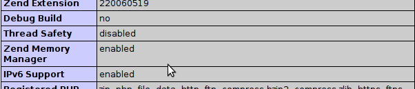

Apache NetBeans
Apache NetBeansHowToConfigureXDebug
Note: These pages are being reviewed.
How to configure XDebug
Overview
This document describes the installation of xdebug. There are separate sections for Linux, Mac OS X and Windows users. However, the information in How to on Linux may be interesting for Windows users as well. Please send your comments to users@netbeans.apache.org if you have any comments or questions.
Other Useful Documents
See installation, configuration instructions:
-
Flowchart showing basic XDebug installation and configuration procedure
-
XDebug wizard 'VERY USEFUL' "DON’T OVERLOOK A MUST USE"
-
Command-line PHP interpreter and how to specify it in Netbeans
-
Various XDebug-related threads at the NetBeans PHP Users Forum, especially Won’t Connect to XDebug
General Information
-
Edit PHP Configuration - name of configuration file is php.ini
-
The location of php.ini differs between operating systems, Linux distributions, types of installation (from packages or sources), and/or Windows-based solution stacks (WAMP, XAMP)
-
Typically, more than one php.ini file exists.
Important note for WAMP: xdebug configuration (below) must be added in WAMP’s apache-directory php.ini (e.g. C:\wamp\bin\apache\Apache.x.y.z\bin\php.ini), otherwise it won’t be loaded by Apache. Thus configured, it will work in NetBeans, but if you experience "call to unidentified function" in the debug window, add the xdebug configuration to C:\wamp\bin\php\php.a.b.c\php.ini as well.
-
Xdebug configuration is either inside php.ini or in another ini file often called xdebug.ini - this ini file is then shared between both configurations (Script and Local Web Server)
-
Xdebug is incompatible with the Zend Optimizer and Zend Studio Debugger extensions. These extensions should be commented out. See user’s comment:
[Zend]
;zend_extension_ts = "C:\xampp\php\zendOptimizer\lib\ZendExtensionManager.dll"
;zend_extension_manager.optimizer_ts = "C:\xampp\php\zendOptimizer\lib\Optimizer"
;zend_optimizer.enable_loader = 0
;zend_optimizer.optimization_level=15
;zend_optimizer.license_path =; Local Variables:
; tab-width: 4
; Local Variables:
; tab-width: 4
; End:-
NOTICE: From PHP 5.3 onwards, you need to use zend_extension and not zend_extension_ts.
Tips from the NetBeans Forums
A user provides the following additional tips:
-
This app is provided by the xdebug guys. You can copy and paste in your PHPinfo, and it gives you the correct version with step-by-step compilation instructions. Many xDebug problems seem to come from tiny mismatches between the exact PHP release you use, and the exact version of xDebug you use. If you simply downloaded the latest version xdebug, or if you got xdebug off a repository, this is probably part of your problem.
-
Get xdebug’s debugclient working on localhost first, then add Netbeans.
If Netbeans is failing to connect, chances are it’s a problem with xDebug and nothing to do with Netbeans. First, try to achieve the simplest possible xDebug set up: use the bundled command line client "debugclient" instead of netbeans, on localhost, debugging simple php code (e.g. a phpinfo file), with any firewalls and other competing factors or config disabled or removed. When you’ve got this running, then your fight with Netbeans will be on solid ground, and will probably be surprisingly easy.
Instructions on installing Debugclient are cunningly hidden right at the bottom of https://xdebug.org/docs/install
As for actually using it, there’s almost nothing I could find on xdebug’s own site, but there’s good tips on the really helpful page Installing the XDebug Debugger - look under "Can I debug locally?" near the bottom. The important thing is, if debugclient hangs on "Waiting to connect", it hasn’t necessarily failed, it could be working and listening for a session from your browser.
I personally went as far as setting up an Ubuntu Virtualbox on my Windows machine. This took all Windows-related complications out of the equation, and meant I could casually wipe the whole drive and start all over again when things got complicated. I’d recommend this as it gives you complete control and guarantees no conflicting config files. People have spent days, even more than a week or two fighting to get xdebug to work - spend time now to save time later!
Here’s a collection of tips I picked up from 100s of forum posts and from experience:-
-
Always check there aren’t any other php.ini files you haven’t configured (on *nix, "find / -name php.ini"). E.g. there are often different php.inis for command line and for web server PHP.
-
(on *nix) Use the command "netstat -a | grep tcp" when you need to see what’s going on with port 9000
-
Generally, 'fail to bind' type errors are a sign that something is using the port in question. If netstat says port 9000 is busy listening, this is what it’s supposed to do. It might be waiting for a browser to start a session - try it! I think http://www.thierryb.net/pdtwiki/index.php?title=Using_PDT_:_Installation_:_Installing_the_XDebug_Debugger has how.
-
Only use those socket-based php test files like https://blogs.oracle.com/netbeansphp/entry/howto_check_xdebug_installation sparingly. When they hang, they can tie up the port and complicate the question. Reboot and restart Apache often. Also, don’t forget to try them through a browser as well as the command line. If this gives you a fancy error screen with backtraces and some orange colouring, that’s a good sign - that’s xdebug at work!
-
Don’t obsess over every php.ini option. Most of the defaults are fine. The really important ones are the host, and making sure that whatever port you set in php.ini is matched by your client.
-
Occasionally, on some systems, localhost isn’t localhost. If this might affect you (it probably doesn’t), put 127.0.0.1 instead.
-
Look at your other debugging-related php.ini settings. Turn them on. This isn’t essential, but it helps a lot. I also uncommented the report_zend_debug = 0 line to make sure that this is off and not competing. I don’t know if this helped, but xdebug now works, so it didn’t hurt.
-
In your phpinfo, check that "Debug build" IS "No". If it’s "yes", this could be a big problem. Research it. I believe you might need to reinstall PHP, to make sure that it is "no".
-
Make sure there’s nothing Zend other than xDebug in either phpinfo, php -m on the command line (if you’ve got command line php) or php.ini. If there’s any other Zend modules in php.ini, comment them out.
-
If you are mapping server paths to project paths, you must map the full project folders to each other, not the parent folders. For example, the mapping
D:\apps\apache\2.2\htdocs --> D:\Users\Setebos\Documents\code\phpwill not work. The mapping
D:\apps\apache\2.2\htdocs\tutorial --> D:\Users\Setebos\Documents\code\php\tutorialwill work.
-
-
XDebug Port Stopped by SELinux
On Linux systems, if your SELinux policies are enforced, NetBeans will not be able to connect. The reason is that SELinux stops apache from any other port other than the known 80. You can tackle the problem by passing the xdebug port (9000) for apache in the SELinux, using the following command:
semanage port -a -t http_port_t -p tcp 9000Optionally, you can disable System Default Enforcing of SELinux.
How to on Linux
-
e.g. Ubuntu files layout (xdebug configuration is in both php.ini files):
/etc/php5/ |-- apache2 | |-- conf.d -> ../conf.d | |-- php.ini | `-- php.ini.ucf-dist |-- cli | |-- conf.d -> ../conf.d | |-- php.ini | `-- php.ini.ucf-dist `-- conf.d |-- mysql.ini |-- mysqli.ini -
alternative Ubuntu files layout (xdebug configuration is in xdebug.ini shared between both configurations. If this is your case then you better add related directives to xdebug.ini. See article Xdebug On Ubuntu):
/etc/php5/ |-- apache2 | |-- conf.d -> ../conf.d | |-- php.ini | `-- php.ini.ucf-dist |-- cli | |-- conf.d -> ../conf.d | |-- php.ini | `-- php.ini.ucf-dist `-- conf.d |-- mysql.ini |-- mysqli.ini |-- xdebug.ini -
php.ini (or xdebug.ini) should contain at least following settings (see all settings).
zend_extension=/path/to/xdebug.so xdebug.remote_enable=1 xdebug.remote_handler=dbgp xdebug.remote_mode=req xdebug.remote_host=127.0.0.1 xdebug.remote_port=9000 -
NOTICE: From PHP 5.3 onwards, you need to use zend_extension and not zend_extension_ts.
-
Nginx users: Note that restarting nginx will not reload php.ini! You will need to restart PHP, or your server.
-
/path/to/xdebug.so is just example. Check that the file really exists on given path.
-
For Script verify that Xdebug appears in the Zend module lists after: php -m
-
For Local Web Server verify that Xdebug appears in the Zend modules (not PHP Modules) after: : php -mf path_to_ini_file/php.ini
[PHPModules] bcmath bz2 calendar ... [ZendModules] Xdebug -
For Local Web Server you can alternatively create a phpinfo.php file containing the line '<?php phpinfo(); ?>', ls run and watch whether information about Xdebug will be displayed
-
Optionally enable Xdebug logging by adding into php.ini also: xdebug.remote_log=/log_path/xdebug.log
-
Optionally enable NetBeans PHP debugger logging by starting NetBeans with -J-Dorg.netbeans.modules.php.dbgp.level=400 or by editing netbeans.conf
netbeans/etc/ |-- netbeans.clusters |-- netbeans.conf `-- netbeans.import -
whenever php.ini is modified don’t forget restart web server (not needed for Script)
How to on MAC OS X Snow Leopard
A google search shows many blogs that state that installing xdebug on MAC is tedious and problematic. Their usual recommendation is to download some precompiled version to be safe. Well, this is probably the easiest way to install XDebug but if it doesn’t work then you are in trouble. Compiling your own version of xdebug is actually easier than you would think and you don’t even need to use the command line so much.
Built in php and apache
I started with a fresh Snow Leopard installation that comes with prebuilt apache and php.
Get Xdebug Sources and Install
-
Download your xdebug sources from the xdebug download page. Use the Tailored Installation Instructions to download the correct version. After you press analyze my phpinfo() output you should get a recommended version to download with all necessary instructions for installation.
-
If there is a php.ini file in your /etc/ folder, add the following to the end. If there is not a php.ini file then simply create the php.ini file. There may be a php.ini.default file. Don’t update this file but rather create a new php.ini and add only xdebug directives into it. Change path to xdebug.so to your path, of course.
zend_extension = /usr/lib/php/extensions/no-debug-non-zts-20090626/xdebug.so xdebug.remote_enable=on xdebug.remote_log="/var/log/xdebug.log" xdebug.remote_host=localhost xdebug.remote_handler=dbgp xdebug.remote_port=9000 -
Above is my entire php.ini file. All other directives are saved in php.ini.default.
-
Note: xdebug.remote_log is optional.
-
Note: (probably works with OS X versions before 10.8 Mountain Lion) If you are using PHP from the MAMP package, your php.ini file is in /Applications/MAMP/conf/php5/php.ini by default and the default directory in which to install xdebug.so is /Applications/MAMP/bin/php5/lib/php/extensions/no-debug-non-zts-20060613/.
-
IMPORTANT for Mac OS X 10.8 (Mountain Lion): Contrary to the note above, you have to make the changes in /Applications/MAMP/bin/php/php5.x.y/conf/php.ini, where php5.x.y is the active PHP version chosen in MAMP
Verify installation
-
Check the installation either in a browser or in the command line, depending on whether you want to debug a web page or a cli script. The output is the same as on linux or on WIN.
-
For web page run phpinfo() again.
-
For command line run the following. You will get longer output but this is the most important part of the output.
$php -i | grep xdebug xdebug.remote_enable => On => On xdebug.remote_handler => dbgp => dbgp xdebug.remote_host => localhost => localhost xdebug.remote_log => /var/log/xdebug.log => /var/log/xdebug.log xdebug.remote_mode => req => req xdebug.remote_port => 9000 => 9000 -
and that’s it!
Notes on Windows Configuration
-
php.ini location hint for Local Web Server for XAMP on Windows: c:\xamp\apache\bin\php.ini
-
php.ini location hints for Script(CGI/CLI) for XAMP on Windows: c:\xampp\php\php.ini
-
for Windows use zend_extension_ts instead of zend_extension (e.g. zend_extension_ts=c:\path\to\php_xdebug.dll). Again c:\path\to\php_xdebug.dll must exist.
-
NOTICE: From PHP 5.3 onwards, you need to use zend_extension and not zend_extension_ts.
-
For more information, please see Configuring PHP Development Environment in Windows.
How to configure xdebug with WAMP
-
installing xdebug on WAMP is a bit diferrent and requires another steps to sucesfully load module. I focus on the easiest use case, installation using precompiled .dll.
Prerequisities
-
I assume these prerequisities:
-
you have latest version of WAMP installed. That’s WAMP 2.0 when writing this tutorial (Apr 15, 2009). These includes:
-
Apache 2.2.11
-
PHP 5.2.9-1
-
I don’t care about MySQL at this moment ..,
-
-
Steps
-
if you didn’t customize your installation paths then you should find php in <wamp_folder>\bin
C:. |-- apache | <some folders> |-- mysql | <some folders> `-- php |-- php5.2.9-1 |-- dev |-- ext |-- extras | |-- mibs | |-- openssl | |-- pdf-related `-- PEAR -
folder ext is used for extension and we used it to copy xdebug’s dll there. However, you can use whatever folder you want.
-
download xdebug from https://xdebug.org/download. Carefully choose version you download! There is a description you should read on download page! I downloaded php_xdebug-2.0.4-5.2.8.dll for WAMP2 with prerequisities above. Consult our FAQ at the end of this page if you need more help on choosing a version.
-
open your php.ini that is easily accesible from tray. Wamp tray icon → PHP → php.ini
-
add following lines to your php.ini. Use full path! (change your .dll name to match your version, of course)
zend_extension_ts="C:/wamp/bin/php/php5.2.9-1/ext/php_xdebug-2.0.4-5.2.8.dll" xdebug.remote_enable=on xdebug.remote_handler=dbgp xdebug.remote_host=localhost xdebug.remote_port=9000 -
NOTICE: From PHP 5.3 onwards, you need to use zend_extension and not zend_extension_ts.
-
note that you always use zend_extension_ts unless you intentionally installed non thread safe apache version
-
restart WAMP services (restart Apache is enough)
-
open localhost (or WAMP server default page) and check if xdebug is between Loaded Extensions
-
click on phpinfo() on default WAMP page or create file containing <? phpinfo() ?>. You should see the same as for Linux tutorial above:
-
You can check your configuration using simple script written by Radek Matous and posted on blog.oracle.com. If you are using WAMP then you don’t have php on path, most probably. All you have to do is to copy this code to php file and then call it from browser with $_GET variable in url ?XDEBUG_SESSION_START=mysession. Let’s say your file i called dbgtest.php and it’s in web directory. All you have to do is type http://localhost/dbgtest.php?XDEBUG_SESSION_START=mysession.
-
If xdebug is properly installed then script started in step 1. should print message like "connection established: Resource id #5". If no message is printed and the script is still running, then xdebug isn’t installed properly or uses different port or whatever else. So, kill the running process and investigate where the problem is, but this is the other story.
<?php $address = '127.0.0.1'; $port = 9000; $sock = socket_create(AF_INET, SOCK_STREAM, 0); socket_bind($sock, $address, $port) or die('Unable to bind'); socket_listen($sock); $client = socket_accept($sock); echo "connection established: $client"; socket_close($client); socket_close($sock); ?>
Troubleshooting
-
if something goes wrong then check your PHP Error Log that you can find after invoking WAMP context menu from system tray
-
e,g,: WAMP icon → PHP → Error Log
-
-
Probably typo or file was not found if you see this:
PHP Warning: PHP Startup: Unable to load dynamic library 'c:/wamp/bin/php/php5.2.9-1/ext/php_xdebug-2.0.4-5.2.8.dl' - The specified module could not be found. in Unknown on line 0 -
You downloaded wrong version of php.ini if you see following:
PHP Warning: PHP Startup: Unable to load dynamic library 'c:/wamp/bin/php/php5.2.9-1/ext/php_xdebug-2.0.4-5.3.0-vc9.dll' - The application has failed to start because its side-by-side configuration is incorrect. Please see the application event log for more detail. in Unknown on line 0 -
Do NOT use XAMPP 1.7.0. If you set up XDebug as described here, the Apache server crashes when you run or debug a file or project. The workaround prevents the IDE from stopping at breakpoints. XAMPP 1.7.1 is fine, with XDebug 2.0.4 VC 5.2 thread-safe.
-
If you are trying to debug a Zend Framework project, make sure you set the Run Configuration - you can do this by selecting the "properties" of the project.
-
If you are having problems with "Register Provider" then try updating to the latest Zend Framework. Latest known issues are regarded to version 1.10. You can either just download and unzip over the top of the old framework, or if it is in XAMP you can use pear to update. To update in PEAR use the commands: pear channel-discover pear.zfcampus.org, pear install zfcampus/zf. For windows users: make sure you start the command line instance with administrator priviledges and you starting directory should be //XAMPinstall/php/
-
try to check Apache Error Log as well.
Enable Xdebug logging
by adding into php.ini: xdebug.remote_log=/log_path/xdebug.log (see https://xdebug.org/docs/all_settings) the content of log is in /log_path/xdebug.log (this path is just an example, for Windows something like: C:... && xdebug must be writable )
Enable NetBeans PHP debugger logging
helpful is to turn on the debugger-related logging and attach the log into Issuezilla as well. See following simple steps:
-
Running NetBeans with logging turned on. You can do this by:
either adding the text:-J-Dorg.netbeans.modules.php.dbgp.level=400 to your $NB_BIN/etc/netbeans.conf, property netbeans_default_options or running NetBeans directly with those parameters, like: $NB_BIN/bin/netbeans -J-Dorg.netbeans.modules.php.dbgp.level=400 -
When NetBeans starts up, reproduce the bug, so it is logged into the log files.
-
Then file a new issue (click this link) and attach (or just send me directly):
the content of IDE log file Menu -> View -> IDE Log File (or directly $YOUR_NB_USER_DIR/var/log/messages.log) the content of the Output Window -
Attach (or just send me directly) both log files xdebug.log and messages.log
Remote Debuging
-
For Remote Web Server configuration Xdebug must be properly configured on remote server (not on local one)
-
you need to have correctly configured property xdebug_remote.host on remote machine. The IP address of local machine has to be defined in this property. For example, you want to debug your source code on remote machine 192.168.0.1 using Netbeans installed on 192.168.0.2. You need to change xdebug.remote_host on 192.168.0.1 to xdebug.remote_host=192.168.0.2. If doesn’t work verify you have port configured in xdebug.remote_port open on both machines.
-
-
sometimes, Path Mapping must be used
Using xdebug_file_link_format with NetBeans
In php.ini, the xdebug option xdebug.file_link_format opens the given file path in your editor of choice if it has a custom URL scheme. You can use this option with NetBeans but you have to customize your environment. A discussion of ways and means of using xdebug_file_link_format with NetBeans is available on The PHP Users Forum.
Other useful resources:
How to configure xdebug to work only on one virtual server ? - an online article on how to configure xdebug
FAQ
-
what version of Xdebug should I download?
First, you can try the app that XDebug developers provide for determining the version of XDebug to download! It’s located at https://xdebug.org/wizard. Paste the full output of phpinfo() (either a copy & paste of the HTML version or php -i output) into the form and submit it. The app returns tailored download and installation instructions. Do not paste the raw HTML (from view-source) into the form.
If this form does not work for you and you need to find the XDebug version manually, Xdebug has a simple rule for choosing a version of xdebug extension youneed to download: "The Windows binaries generally work for every mini release for the mentioned PHP version, althoughthe extension is built against the most current PHP version at that time. The VCx marker tells with which compiler the extension was built, and Non-thread-safe whether ZTS was disabled. Those qualifiers need to match the PHP version you’re using."
You need to get answers on few simple questions, firstly 1. whats your version of php? there are more ways to find this out either
$ php -v PHP 5.2.6-3ubuntu4.1 with Suhosin-Patch 0.9.6.2 (cli) (built: Apr 23 2009 14:37:14) Copyright (c) 1997-2008 The PHP Group Zend Engine v2.2.0, Copyright (c) 1998-2008 Zend Technologies with Xdebug v2.0.3, Copyright (c) 2002-2007, by Derick Rethansor create a file
<?php phpinfo(); ?>you should get output like below after running it in browser

Clearly my version of php is 5.2.6-3
-
Do I need Non Thread Safe or Thread Safe version? non-threaded use of PHP" for example the CLI, CGI or Apache 1.3 module threaded usage of PHP, for example the Apache 2 work MPM or the the ISAPI module
either run on Linux
$ apache2 -V Server version: Apache/2.2.11 (Ubuntu) Server built: Jun 11 2009 03:24:38 Server's Module Magic Number: 20051115:21 Server loaded: APR 1.2.12, APR-Util 1.2.12 Compiled using: APR 1.2.12, APR-Util 1.2.12 Architecture: 64-bit ==Server MPM: Prefork!!!== ==threaded: no!!!== ==forked: yes (variable process count)!!!== Server compiled with.... -D APACHE_MPM_DIR="server/mpm/prefork" -D APR_HAS_SENDFILE -D APR_HAS_MMAP -D APR_HAVE_IPV6 (IPv4-mapped addresses enabled) -D APR_USE_SYSVSEM_SERIALIZE -D APR_USE_PTHREAD_SERIALIZE -D SINGLE_LISTEN_UNSERIALIZED_ACCEPT -D APR_HAS_OTHER_CHILD -D AP_HAVE_RELIABLE_PIPED_LOGS -D DYNAMIC_MODULE_LIMIT=128 -D HTTPD_ROOT="" -D SUEXEC_BIN="/usr/lib/apache2/suexec" -D DEFAULT_PIDLOG="/var/run/apache2.pid" -D DEFAULT_SCOREBOARD="logs/apache_runtime_status" -D DEFAULT_LOCKFILE="/var/run/apache2/accept.lock" -D DEFAULT_ERRORLOG="logs/error_log" -D AP_TYPES_CONFIG_FILE="/etc/apache2/mime.types" -D SERVER_CONFIG_FILE="/etc/apache2/apache2.conf"or on Windows
C:\wamp\bin\apache\Apache2.2.11\bin>httpd Server version: Apache/2.2.11 (Win32) Server built: Dec 10 2008 00:10:06 Server's Module Magic Number: 20051115:21 Server loaded: APR 1.3.3, APR-Util 1.3.4 Compiled using: APR 1.3.3, APR-Util 1.3.4 Architecture: 32-bit ==Server MPM: WinNT!!!== ==threaded: yes (fixed thread count)!!!== ==forked: no !!!== Server compiled with.... -D APACHE_MPM_DIR="server/mpm/winnt" -D APR_HAS_SENDFILE -D APR_HAS_MMAP -D APR_HAS_OTHER_CHILD -D AP_HAVE_RELIABLE_PIPED_LOGS -D DYNAMIC_MODULE_LIMIT=128 -D HTTPD_ROOT="/apache" -D SUEXEC_BIN="/apache/bin/suexec" -D DEFAULT_SCOREBOARD="logs/apache_runti -D DEFAULT_ERRORLOG="logs/error.log" -D AP_TYPES_CONFIG_FILE="conf/mime.types -D SERVER_CONFIG_FILE="conf/httpd.conf"the other option is to have a look on phpinfo on
or you can use command line Linux:
$ php -i | grep "Thread Safety" Thread Safety => disabledWindows:
C:\wamp\bin\php\php5.2.9-2>php.exe -i -w phpinfo() PHP Version => 5.2.9-2 System => Windows NT FELIPEE-VISTA 6.0 build 6001 Build Date => Apr 9 2009 08:22:37 Configure Command => cscript /nologo configure.js "--enable-snapshot-build" "--enable-debug-pack" "--with-snapshot-template=d:\php-sdk\snap_5_2 vc6\x86\template" "--with-php-build=d:\php-sdk\snap_5_2\vc6\x86\php_build" "--with-pdo-oci=D:\php-sdk\oracle\instantclient10\sdk,shared" "--with oci8=D:\php-sdk\oracle\instantclient10\sdk,shared" Server API => Command Line Interface Virtual Directory Support => enabled Configuration File (php.ini) Path => C:\Windows Loaded Configuration File => C:\wamp\bin\php\php5.2.9-2\php.ini Scan this dir for additional .ini files => (none) additional .ini files parsed => (none) PHP API => 20041225 PHP Extension => 20060613 Zend Extension => 220060519 Debug Build => no Thread Safety => enabled Zend Memory Manager => enabled IPv6 Support => enabled Registered PHP Streams => php, file, data, http, ftp, compress.zlib Registered Stream Socket Transports => tcp, udp Registered Stream Filters => convert.iconv.*, string.rot13, string.toupper, string.tolower, string.strip_tags, convert.*, consumed, zlib.*My Thread Safety is apparently disabled so I don’t need thread safe version. If you use Windows you most probably need thread safe version.
And that’s it! Go to Xdebug download page and download appropriate file. I need veersion marked as 5.2. and NonThreadSafe.
How to build Xdebug (useful for php5.3)
Ubuntu
If you build your php5.3 from sources then the best way how to get stable xdebug to your Ubuntu is to build it. Well, building from sources can be tedious but building xdebug is pretty easy process. So, let’s get started. I am using Karmic Koala release of Ubuntu.
This process is well described on https://xdebug.org/docs/install as well.
Get your xdebug sources
Download sources from Xdebug download page. Xdebug 2.1.beta2 (or beta3 when you checkout sources) is current release that correctly works with php5.3.x (at the time being).
$ wget http://xdebug.org/files/xdebug-2.1.0beta2.tgz
or
svn co svn://svn.xdebug.org/svn/xdebug/xdebug/trunk xdebugExtract Xdebug sources
if you downloaded .tgz then extract somewhere
$ tar -xzf xdebug-2.1.0beta2.tgz
$ cd xdebug-2.1.0beta2Configure
Run
$ phpize
Configuring for:
PHP Api Version: 20090626
Zend Module Api No: 20090626
Zend Extension Api No: 220090626then run xdebug configure script
./configure --enable-xdebugSet up your environment
configure php.ini
$ sudo gedit /etc/php5/apache/php.iniand add xdebug.so path to the end of file.
zend_extension="/etc/php5/xdebug/xdebug.so"
xdebug.remote_enable=on
xdebug.remote_handler=dbgp
xdebug.remote_host=localhost
xdebug.remote_port=9000restart apache
$ sudo /etc/init.d/apache2 restartand have a look if phpinfo() output contains xdebug module.
Troubleshooting
Please, refer to https://xdebug.org with xdebug installation, build process. You may want to see "installation how to" on https://xdebug.org/docs/install in particular.
Meet php version requirements
As written on xdebug web page, if configure script fails with something like:
../configure: line 1960: syntax error near unexpected token
`PHP_NEW_EXTENSION(xdebug,'
../configure: line 1960: ` PHP_NEW_EXTENSION(xdebug, xdebug.c
xdebug_code_coverage.c xdebug_com.c xdebug_handler_gdb.c
xdebug_handler_php3.c xdebug_handlers.c xdebug_llist.c xdebug_hash.c
xdebug_profiler.c xdebug_superglobals.c xdebug_var.c usefulstuff.c,
$ext_shared)'then it means that you do not meet the PHP 4.3.x version requirement for Xdebug.
Upgrade your autotools
If you get:
configure: line 1145: PHP_INIT_BUILD_SYSTEM: command not found
configure: line 1151: syntax error near unexpected token `config.nice'
configure: line 1151: `PHP_CONFIG_NICE(config.nice)'You will need to upgrade your autotools (autoconf, automake and libtool) or install the known working versions: autoconf-2.13, automake-1.5 and libtool-1.4.3.